Shared signed scale: max |error| 0.7339 linear HDR luminance (sqrt display). Raw renders, no denoising.
{
"stageA": "QUALIFIED",
"selected": "S4",
"stageD_historical": false,
"stageD_3pct_depth_matched": false,
"stageD_3pct_full_depth": false,
"stageE_depth_matched_contract": false,
"stageE_3pct_full_depth": false,
"R6b": {
"F0": {
"gate3_full_depth": {
"b_spread": 0.047233510078629706,
"c_spread": 0.03511475782946331,
"pass": false
},
"gate3_depth_matched": {
"b_spread": 0.016078625448136565,
"c_spread": 0.006500384282173409,
"pass": true
}
},
"F1": {
"gate3_full_depth": {
"b_spread": 0.011322406002530164,
"c_spread": 0.018970448050113588,
"pass": true
},
"gate3_depth_matched": {
"b_spread": 0.017288958864135107,
"c_spread": 0.01437654869455814,
"pass": true
}
},
"F2": {
"gate3_full_depth": {
"b_spread": 0.014445704895873629,
"c_spread": 0.009617784131789396,
"pass": true
},
"gate3_depth_matched": {
"b_spread": 0.006529579189413021,
"c_spread": 0.009998410620473666,
"pass": true
}
},
"F3": {
"gate3_full_depth": {
"b_spread": 0.041410305110015505,
"c_spread": 0.015355382125851701,
"pass": false
},
"gate3_depth_matched": {
"b_spread": 0.017574130590347375,
"c_spread": 0.013784740258838002,
"pass": true
}
},
"F4": {
"gate3_full_depth": {
"b_spread": 0.009150890403746476,
"c_spread": 0.021279180890580923,
"pass": true
},
"gate3_depth_matched": {
"b_spread": 0.01705222410358169,
"c_spread": 0.023986354029693874,
"pass": true
}
}
},
"not_run": [
"R3 equal-time frontier comparator",
"R9 other radius / medium"
],
"classification": "NOT_RESOLVED"
}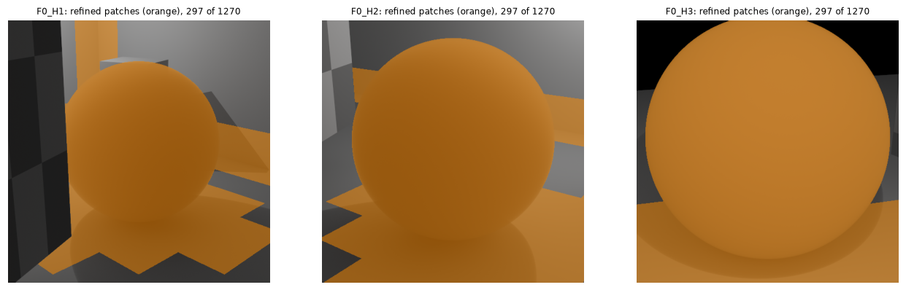
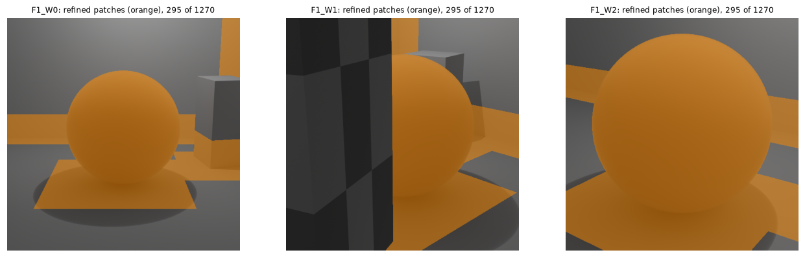
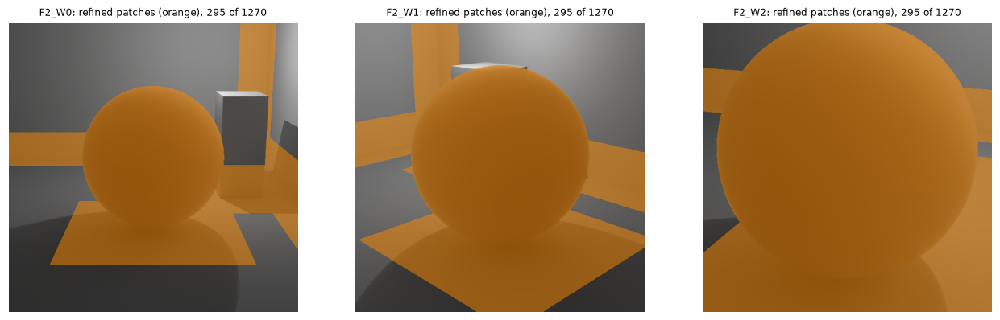
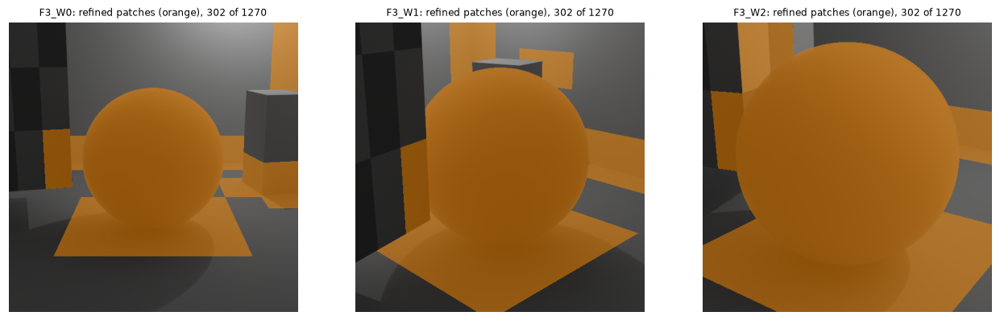
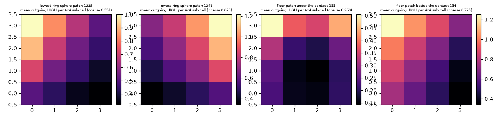
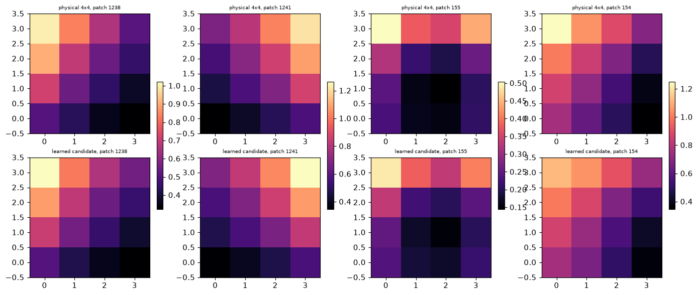
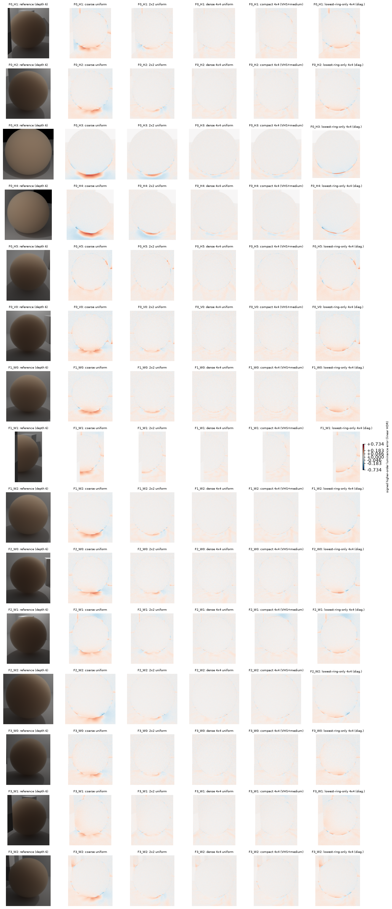
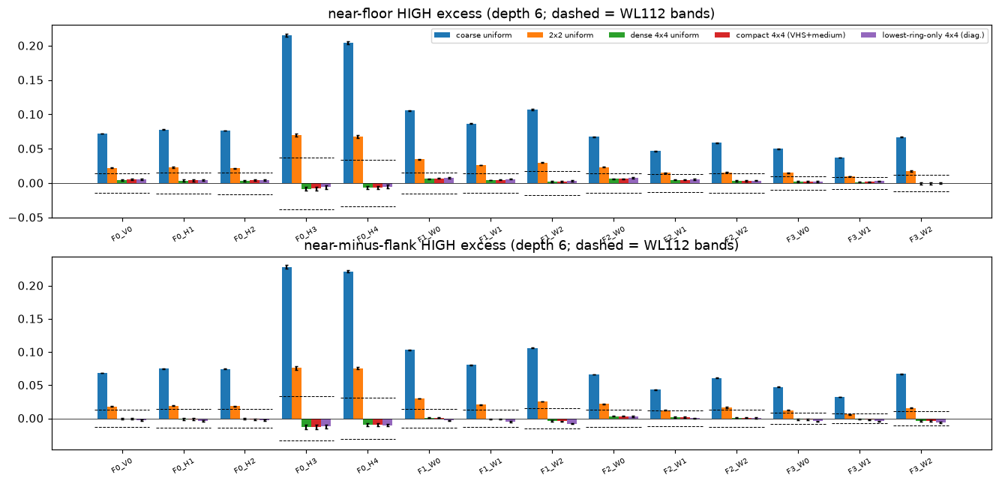
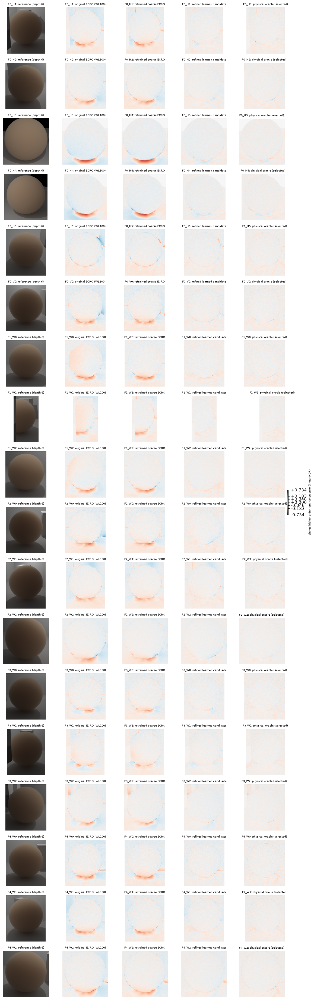
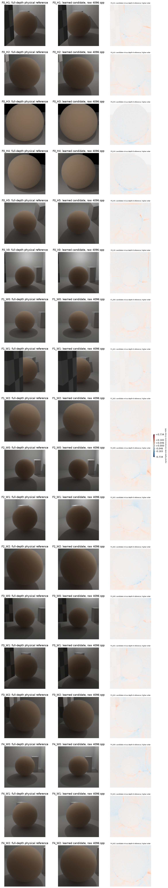
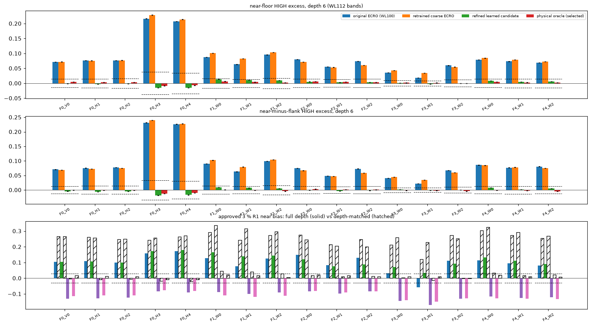
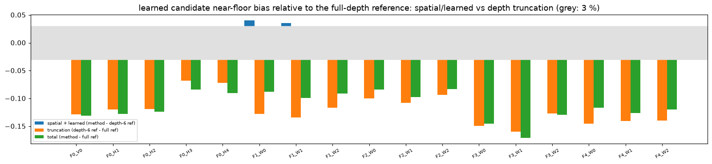
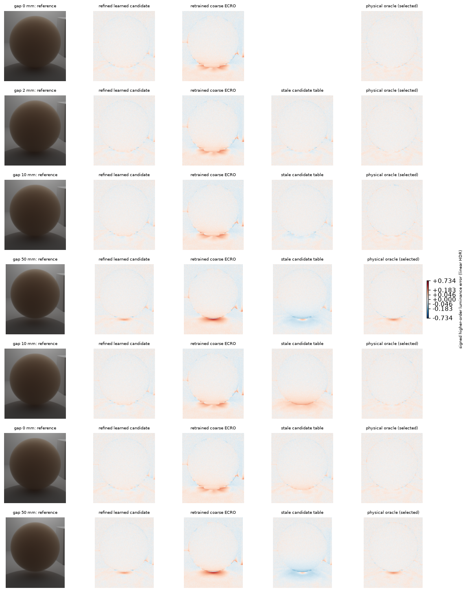
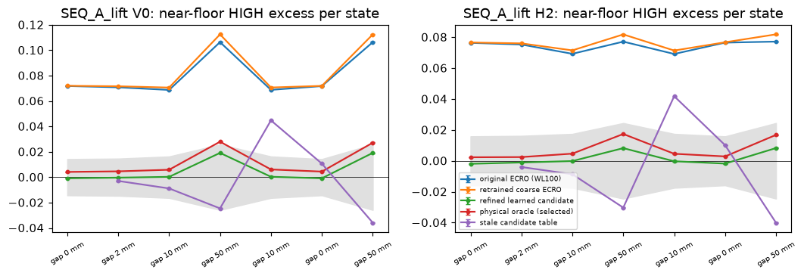
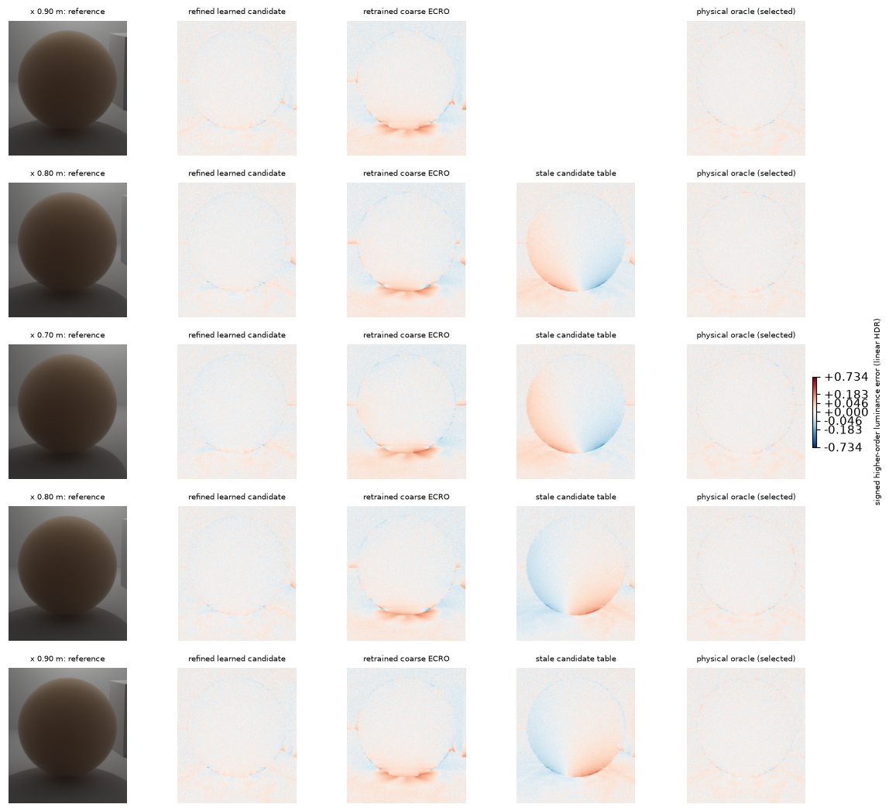
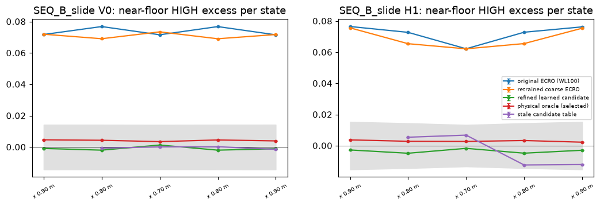
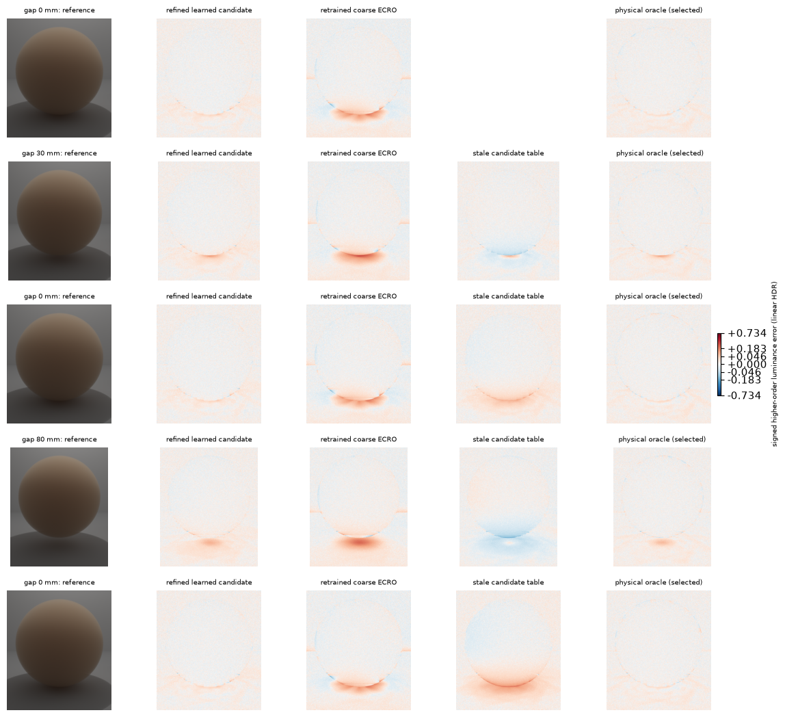
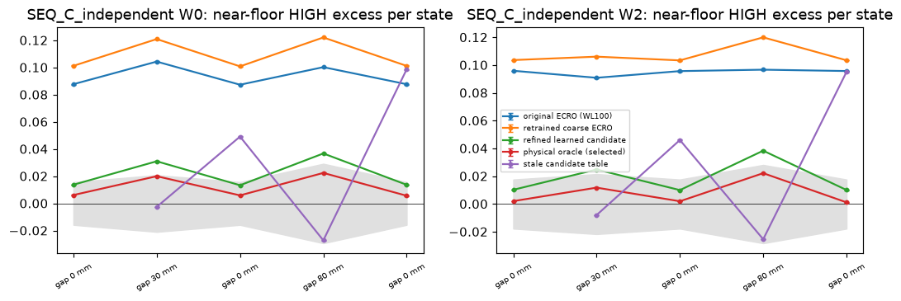
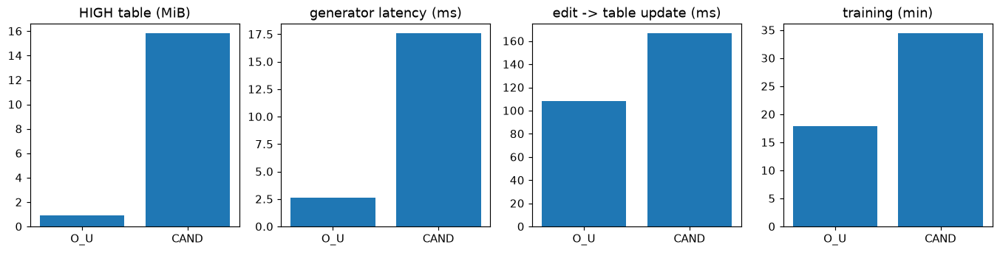